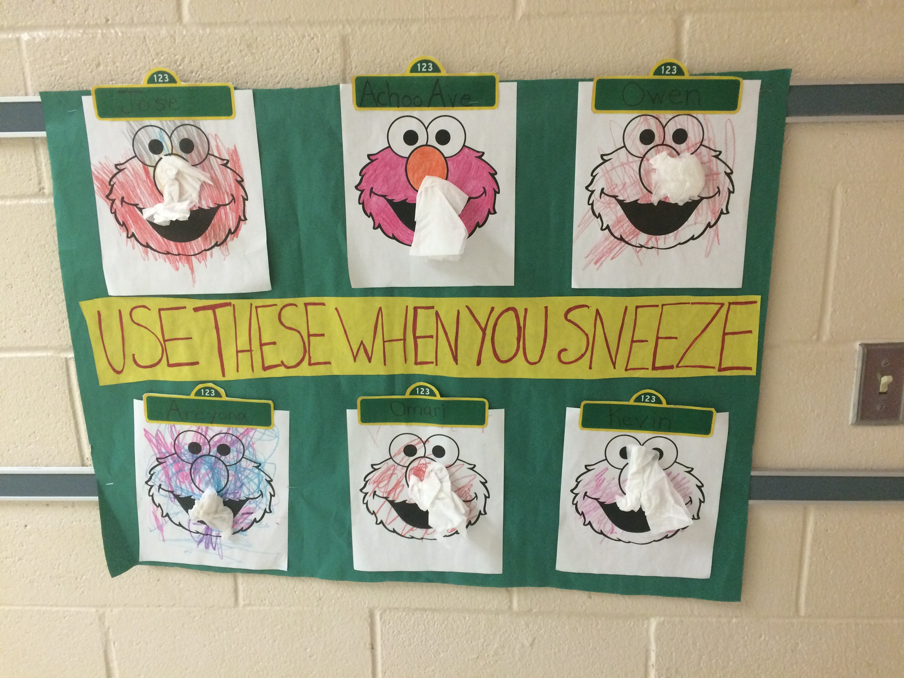
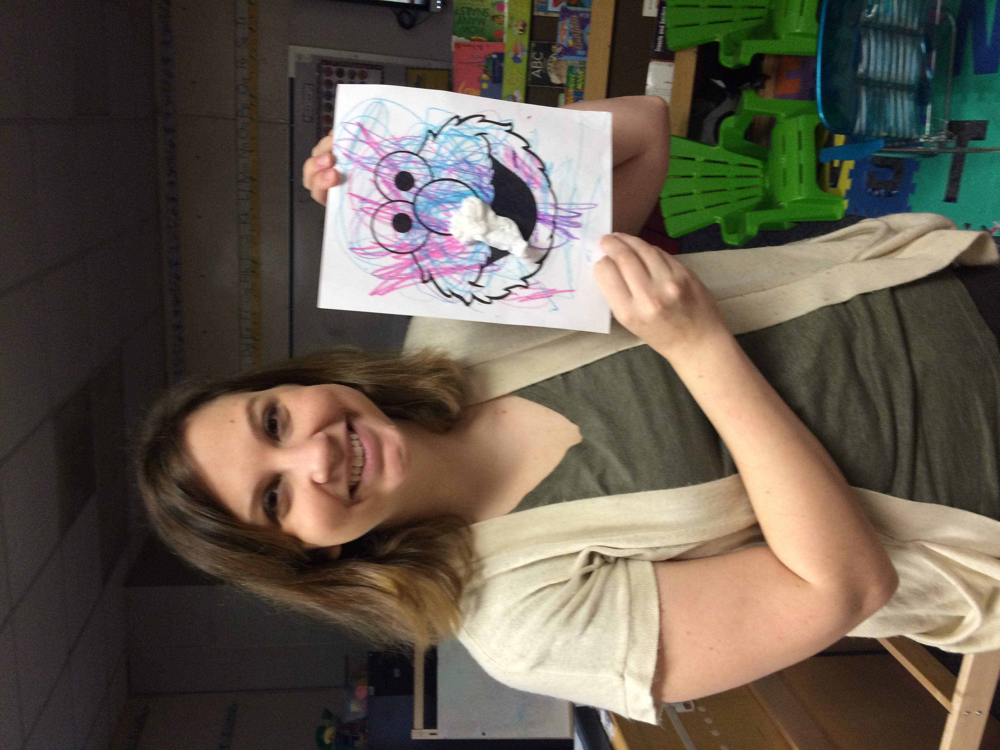
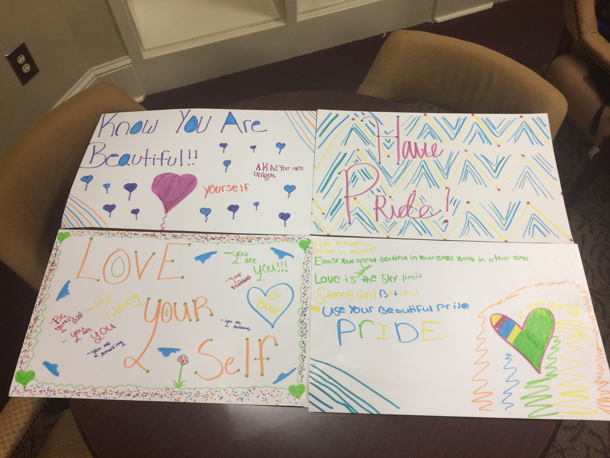
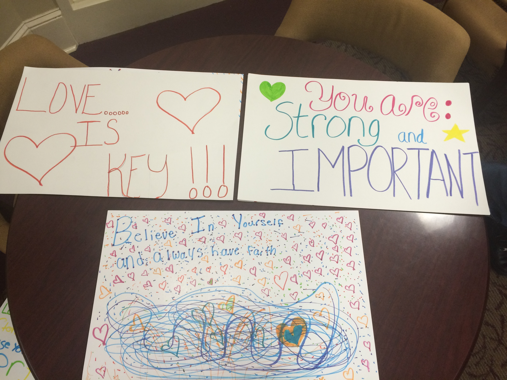
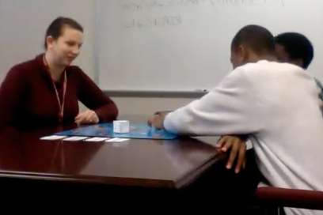

Experience
Elementary School
For this activity the students learned about healthy habits, like using a tissue when you sneeze, and then did this activity. I asked them to color Elmo and then glue a tissue onto his nose. They had so much fun and so did I!
 Middle School
These signs were made in my girl empowerment group. The girls actually suggested to me that they would like to make signs that had positive messages to hang around the school. I was delighted by the idea, so we all made a poster and hung them around the school to help boost morale.
 High School
This is a photo of my Guy’s Group. In this particular lesson the students and I were playing a game that I made about our feelings. Since it can be hard for guys to talk about their feelings I found that adding a somewhat competitive aspect was really helpful for breaking down walls!
